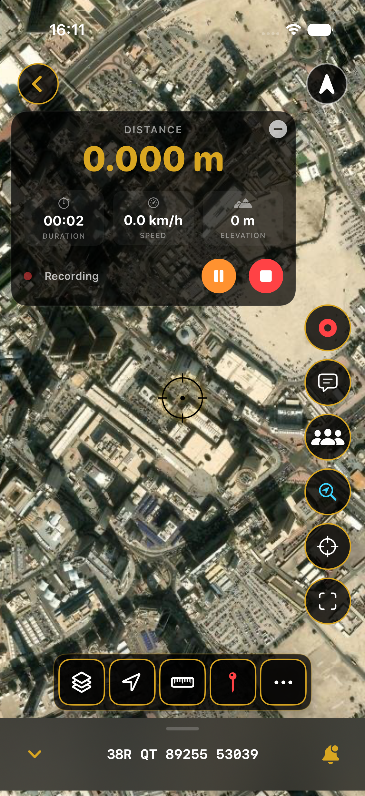

iPhone and iPad
- Open your map and tap Locate. Confirm location access.
- Start Record and check that the route line appears as you move.
- Tap Stop, then reopen the saved track from the Library or relevant layer.
MAPNERO FIELD GUIDES
Prepare a local map, test location access and make a short recording before heading out. Map downloads and GPS recording need separate checks.
Download free. Features and limits depend on platform, file format and plan. App interface available in 20 languages.
See the steps ↓
BEFORE YOU LEAVE
A phone can obtain a satellite position without mobile data when conditions and device settings allow it. That does not mean an online basemap will be available. Import your own map or download the area and zoom levels you need, then test them in Airplane Mode.
Buildings, terrain, battery settings and location permissions can affect a recording. Do not treat a phone track as a survey measurement.
This 21-second English guide covers importing your map, downloading a basemap region separately and reopening the map in Airplane Mode. It covers map preparation; test GPS recording separately using the steps below.
Watch the offline preparation guide on YouTube →Inspect the route’s start, end and any gaps. Reopen the track after closing the recording screen. If you need to use it elsewhere, export GPX and inspect the exported file in your destination app before deleting any original data.
Free recording limits apply; the guides list unlimited recording under Core or higher. GPX export is available on Free in the current mobile export guide.
Yes. A brief foreground test does not establish that your device will keep recording in the background. Inspect a saved test track after locking the screen.
Download the area and zoom levels you will use, not just the map’s overview. Imported local maps and downloaded basemap regions need their own checks.
No. Location conditions, permissions, power settings and device behavior can cause gaps. Test the setup and carry an appropriate backup for your trip.
Guide reviewed 25 October 2026. Menu labels, available formats and plan limits can change. Check the in-app options and linked platform guides.
Start with a small file and confirm the result on your actual device.